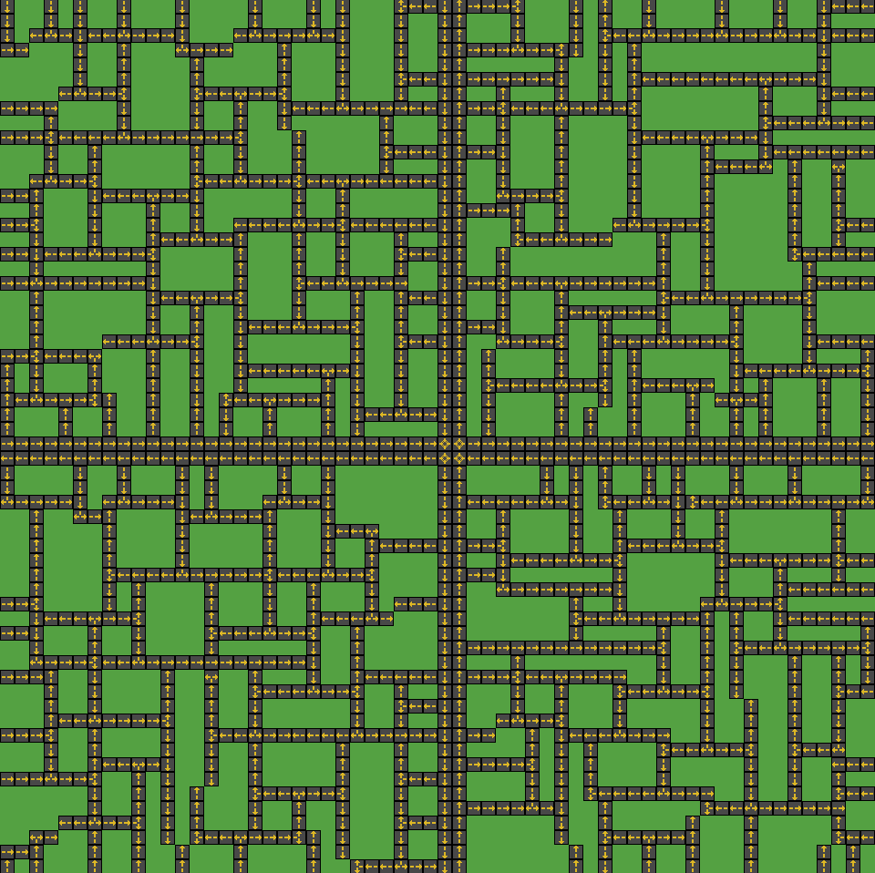
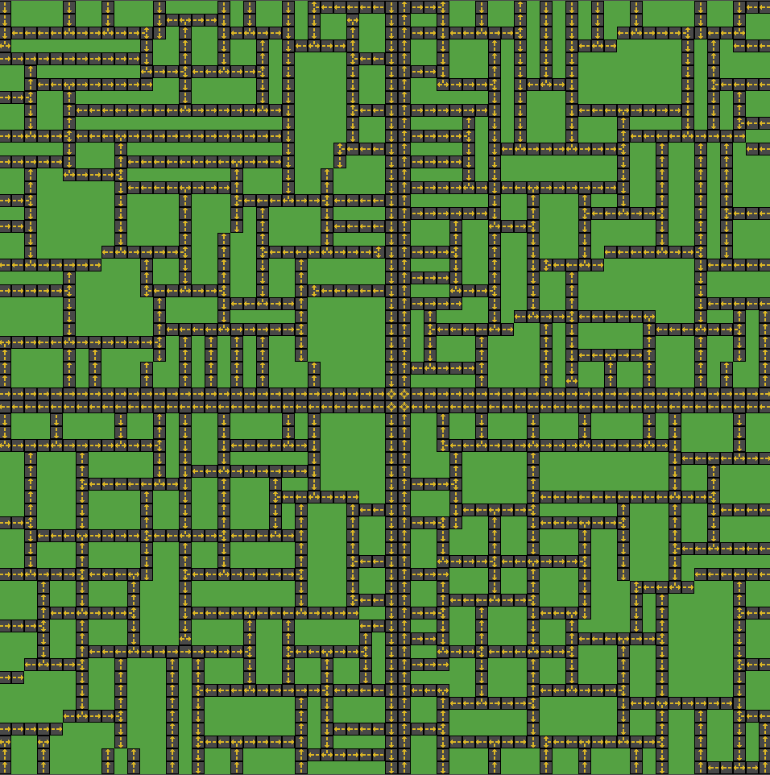

Capturas de Tela




Projeto de TCC focado em geração procedural para simulação de planejaemento urbano em pequena escaala atraves da aplicação de L-Systems e regras parametricas.
A arquitetura do sistema integra normas urbanísticas, geração procedural e representação visual em um processo contínuo. As regras legais são convertidas em parâmetros que alimentam um L-System adaptado, responsável por expandir a malha viária a partir de um ponto inicial, controlando direções, bifurcações e limites de crescimento. Essa matriz gerada é então traduzida automaticamente em elementos gráficos na Tilemap Layer do Godot, permitindo que cada instrução abstrata se torne um componente visual da malha urbana.
Após a geração, o sistema aplica verificações que corrigem trechos incompletos, removem redundâncias e impedem sobreposições, garantindo coerência estrutural e aderência às dimensões exigidas pela legislação. Dessa forma, a arquitetura combina um núcleo generativo baseado em regras, uma camada visual modular e um estágio de validação que assegura que o resultado final seja simultaneamente plausível, consistente e compatível com os parâmetros urbanos definidos.
O sistema proposto buscou simular o planejamento de malhas viárias de bairros residenciais por meio da aplicação de métodos de geração procedural, para produção de um arcabouço metodológico para o desenvolvimento de pesquisas futuras sobre este tópico.
O sistema desenvolvido com base em geração procedural, em específico L-System, demonstrou potencial na simulação em pequena escala, atendendo parcialmente aos objetivos propostos. Como aspectos positivos, tem destaque a capacidade de gerar malhas viárias coerentes com a morfologia de bairros residenciais, integrando regras urbanísticas locais de forma funcional, mesmo em cenários simplificados, tendo em vista a ausência de modelagem e consideração de relevo.
Por outro lado, constatou-se que a abordagem simplificada adotada apresenta limitações significativas. Entre elas, inclui-se o baixo nível de controle sobre a orientação das vias, resultando em inconsistências no sentido do fluxo viário e em bifurcações que, em alguns casos, não se concretizam devido a restrições de coerência espacial. Tais limitações comprometem a funcionalidade do modelo.
Em síntese, embora o sistema tenha se mostrado viável para a geração básica de estruturas urbanas, futuros trabalhos deverão abordar o refinamento do controle direcional e a incorporação de variáveis adicionais, como topografia e filtragem da coerência de sentido em vias, para ampliar a aplicabilidade e robustez do sistema em contextos de planejamento real.